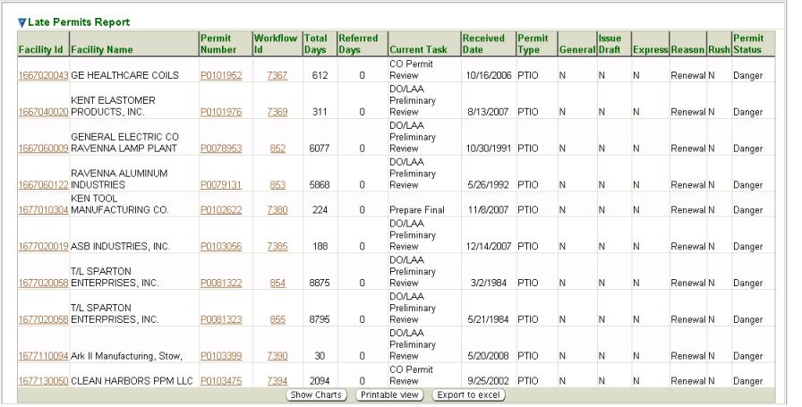

Previous Topic
Next Topic
| Mgmt Reports |
Previous Topic |
Next Topic |
The system’s second-level menu, Late Permits, of the Mgmt Reports tab allows you to search permits in the system with a Warning or Danger status for the associated permitting workflow. The Warning or Danger status is assigned to permits based on a combination of several factors: DO/LAA(s) to which the permit belongs, Types of permit(s) (including historical types such as registration), and the Reason for the permit.
This topic contains the following sections:
You may search for Late Permits on the basis of any or all of the criteria listed below. You can fill in or choose a value for whichever fields you want to use to restrict your search.
If you select various fields and decide you want to change
your
selections and start over, you can click  to clear the selections. Note,
the picklists above have the ability to select multiple items in the
list by holding your “Ctrl” key while clicking on the list items.
to clear the selections. Note,
the picklists above have the ability to select multiple items in the
list by holding your “Ctrl” key while clicking on the list items.
By default, the search criteria are specified to select all Late Permits. You may of course modify these values before you submit your search. The more criteria you are able to specify, the more precise your search will be. Broad searches can retrieve many records that can make it difficult to home in on the information you are really looking for.
After you complete the criteria for the search you want, and
click on  ,
the system searches all of the records for all the permits stored in
its database, selects the ones that meet ALL of the
criteria you have
specified, and returns summary information about the Late Permits
in a
datagrid. The datagrid below is the result of a search submitted with
search criteria specified to select all Renewal (Reason) PTIO
permits with a Danger
status for Akron
Regional Air Quality Management District.
,
the system searches all of the records for all the permits stored in
its database, selects the ones that meet ALL of the
criteria you have
specified, and returns summary information about the Late Permits
in a
datagrid. The datagrid below is the result of a search submitted with
search criteria specified to select all Renewal (Reason) PTIO
permits with a Danger
status for Akron
Regional Air Quality Management District.

Late Permits Search Results Datagrid
The summary data returned includes columns providing Facility ID, Facility Name, Permit Number, Workflow Id, Total Days, Referred Days, Current Task, Received Date, Permit Type, General, Issue Draft, Express, Reason, Rush and Permit Status for all the Late Permits that matches your search criteria. The following summary data is further explained:
As with all datagrids, information from the list may be
viewed,
exported to Excel or printed. By clicking  you may view and print. By
clicking
you may view and print. By
clicking  a pop-up will appear in which you must click Open in
order to
view the information in Excel.
a pop-up will appear in which you must click Open in
order to
view the information in Excel.
This datagrid supports all the common functionality for datagrids as described in Common User Interface Elements - Datagrids
Notice at the bottom of the datagrid a  button. Click this button to
generate pie charts, above the datagrid, displaying data associated
with datagrid. Three charts will be displayed:
button. Click this button to
generate pie charts, above the datagrid, displaying data associated
with datagrid. Three charts will be displayed:
Copyright © 1996, 2004, Oracle. All rights reserved.